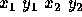
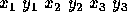

| Cutting Corners |
Bicycle messengers who deliver documents and small items to businesses have long been part of the guerrilla transportation services in several major U.S. cities. The cyclists of Boston are a rare breed of riders. They are notorious for their speed, their disrespect for one-way streets and traffic signals, and their brazen disregard for cars, taxis, buses, and pedestrians.
Bicycle messenger services are very competitive. Billy's Bicycle Messenger Service is no exception. To boost its competitive edge and to determine its actual expenses, BBMS is developing a new scheme for pricing deliveries that depends on the shortest route messengers can travel. You are to write a program to help BBMS determine the distances for these routes.
The following assumptions help simplify your task:
Your program must be able to process several scenarios. Each scenario defines the buildings and the starting and stopping points for a delivery route. The picture below shows a bird's-eye view of a typical scenario.
The input file represents several scenarios. Input for each scenario consists of lines as follows:
First line: nThe number of rectangles describing the buildings in the scenario.
Second line: 
The x- and y-coordinates of the starting and stopping points of the route.
Remaining n lines: 
The x- and y-coordinates of three vertices of a rectangle.
The x- and y-coordinates of all input data are real numbers between 0 and 1000 inclusive. Successive coordinates on a line are separated by one or more blanks. The integer -1 follows the data of the last scenario.
Output should number each scenario (Scenario #1, Scenario #2, etc.) and give the distance of the shortest route from starting to stopping point as illustrated in the Sample Output below. The distance should be written with two digits to the right of the decimal point. Output for successive scenarios should be separated by a blank line.
5 6.5 9 10 3 1 5 3 3 6 6 5.25 2 8 2 8 3.5 6 10 6 12 9 12 7 6 11 6 11 8 10 7 11 7 11 11 -1
Scenario #1 route distance: 7.28